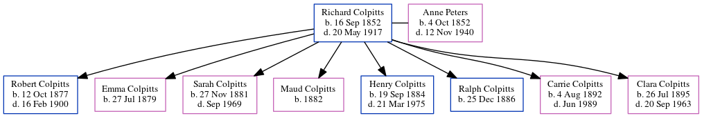

Grace Idaline Peters 1885 - 1956
[ Home ] | [ Calendar ] | [ Surnames Index ] | [ Errors ] | [ Family History ]The 2nd of 7 children of Richmond Peters (a farmer) and Caroline Warman, Grace Peters, the third cousin twice-removed on the father's side of Nigel Horne, was born in Smiths Corner, Kent, New Brunswick, Canada on 22 Sept 18851,2,3,4,5,6,7,8.
During her life, she was living in Weldford, Kent, New Brunswick, Canada on 28 May 18911; in New Brunswick in 19019; in York, New Brunswick, Canada in 19112; and in Douglas, New Brunswick on 1 Jun 19213.
She died on 15 Feb 19566 and was buried in Saint Marys, New Brunswick after 15 Feb 19566.
Parents
- Richmond Noble was born on 9 May 1856
- Caroline Lucinda was born on 17 Mar 1859
Citations
- 1891 Census of Canada Ancestry.com Operations Inc (Marital Status: SingleRelation to Head of House: Daughter)
- 1911 Census of Canada Online publication - Provo, UT, USA: Ancestry.com Operations Inc, 2006. .Original data - Library and Archives Canada. Census of Canada, 1911. Ottawa, Ontario, Canada: Library and Archives Canada, 2007. http://www.collectionscanada.gc.ca/databases/census-19 (Marital Status: SingleRelation to Head of House: Daughter)
- 1921 Census of Canada Ancestry.com Operations Inc (Marital Status: SingleRelation to Head of House: Sister)
- Acadia, Canada, Vital and Church Records (Drouin Collection), 1670-1946 Ancestry.com Operations Inc
- Canada Census 1891 - Findmypast
- Canada, Find A Grave Index, 1600s-Current Ancestry.com Operations, Inc.
- New Brunswick Birth And Baptism Index 1769-1899 - Findmypast
- New Brunswick, Select Births and Baptisms, 1819-1899 Ancestry.com Operations, Inc.
- Canada Census 1901 - Findmypast (was the daughter of the head of the household)
Media
Grace Ideline Peters - birth

Canada Census 1901 - CAN/CENSUS/1901/00742758
New Brunswick Birth and Baptism Index 1769-1899 - R_684923110
New Brunswick Birth and Baptism Index 1769-1899 - R_684906405
Canada Census 1911 - CAN/CENSUS/1911/01556803
Family Tree
Map
Generated by ged2site. Last updated on Jul 3, 2024
Known Issues
May have been living with mother on 28 May 1891, but the addresses don't match or aren't detailed enough to be sure
May have been living with father on 28 May 1891, but the addresses don't match or aren't detailed enough to be sure
May have been living with mother on 1901, but the addresses don't match or aren't detailed enough to be sure
May have been living with father on 1901, but the addresses don't match or aren't detailed enough to be sure
May have been living with mother on 1911, but the addresses don't match or aren't detailed enough to be sure
May have been living with mother on 1 Jun 1921, but the addresses don't match or aren't detailed enough to be sure
Adding date of burial as 'aft 15 Feb 1956'
Date of death is known, but not place